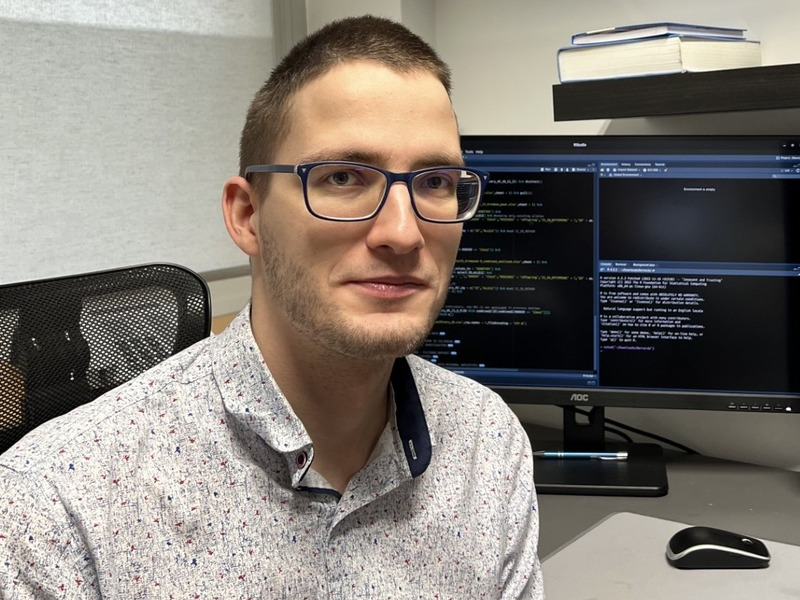
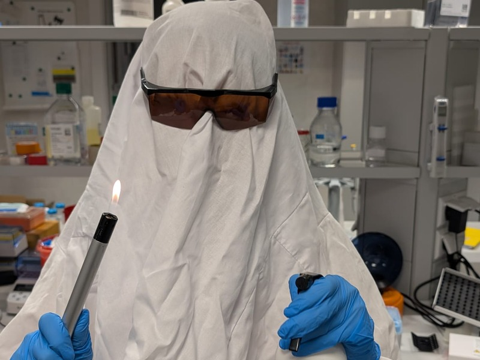
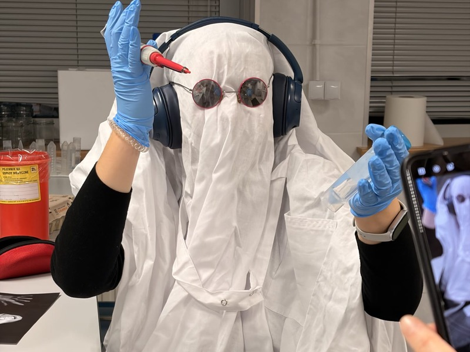
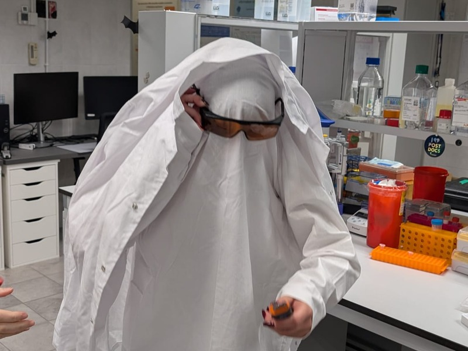
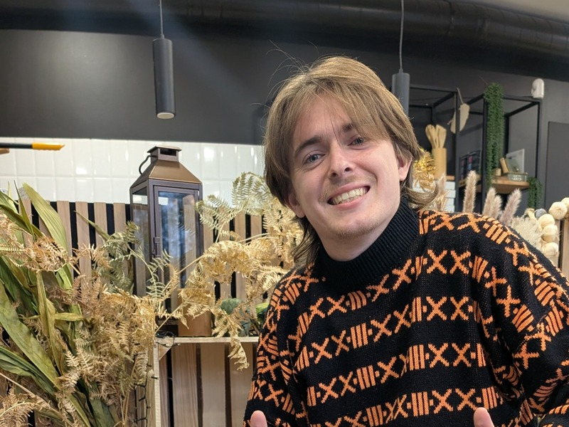

People
Group Leader
- Guillem Ylla, Ph.D.
 LinkedIn
LinkedIn GitHub
GitHubPostdocs

Tomasz Gaczorek, Ph.D.

Nuria Farrús, Ph.D.

Agata Kalita, Ph.D.
Ph.D. Students

Rafał Miłodrowski, Ph.D. Student in Bioinformatics.

Krystian Komenda, Ph.D. Student in Bioinformatics.
Mateo A. Alvarado-Lopez, Ph.D. Student in Bioinformatics.

Karina Galčenko, Ph.D Student in Bioinformatics.

Diego Montiel Ayora, Ph.D Student in Bioinformatics.
Master Students
- Piotr Michnal, Master Student in Bioinformatics.
- Mikołaj Radosz, Master Student in Biotechnology.
Bachelor students
- Natalia Jaworska
- Victoria Miśkowicz
Former Lab Members
- Sara Herrera, vising Ph.D. student (2021).
- Evgenii Baiakhmetov, Visiting scientist (2022).
- While in the lab, Evgenii developed a comprehensive Genome assembly tutorial
- Michał Zawisza, visiting Ph.D. student from Barcelona University.
- Gabriela Machaj, Ph.D. (2021-2024)
- Edossa Fikiru, Ph.D. (2023-2025)
- Szymon Szrajer, B.Sc.+M.Sc. (2022-2025)
- Dominik Robak, M.Sc. (2022-2025)
- Takahisa Yamashita, Ph.D (2023-2026)